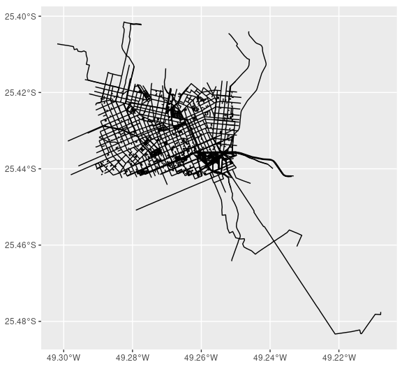
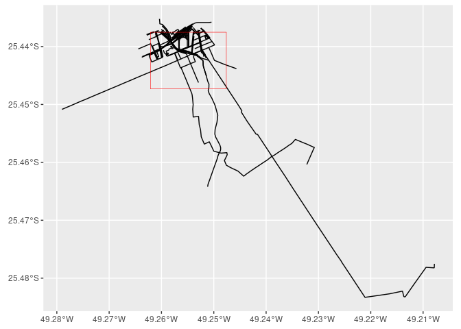
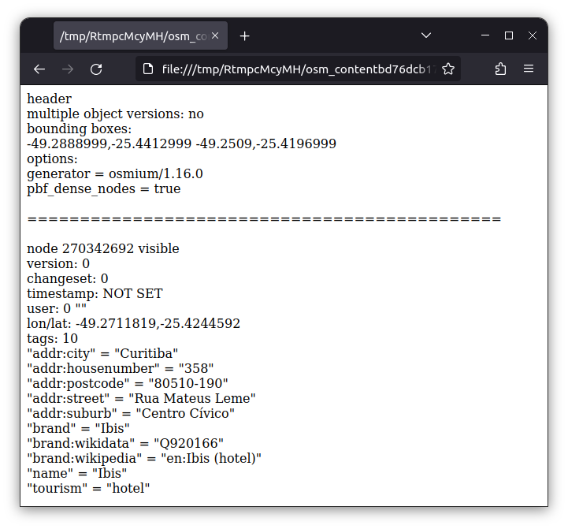

rosmium allows one to use Osmium Tool from R. Osmium is a multipurpose command line tool that enables one to manipulate and analyze OpenStreetMap (OSM) files through several different commands. Currently, this package does not aim to offer functions that cover the entirety of Osmium’s API, instead making available functions that wrap only a very limited set of Osmium’s features.
Installation
Development version:
# install.packages("remotes")
remotes::install_github("ipeaGIT/rosmium")Please note that rosmium requires Osmium to be installed and added to the PATH environment variable of your local system. For instructions on how to install Osmium, please check its official website.
Usage
The package currently includes only three entrypoints to Osmium’s API. To demonstrate them, we will use some sample data bundled with the package.
library(rosmium)
library(ggplot2)
cur_pbf <- system.file("extdata/cur.osm.pbf", package = "rosmium")
cur_pbf_lines <- sf::st_read(cur_pbf, layer = "lines", quiet = TRUE)
ggplot(cur_pbf_lines) + geom_sf()
extract()
extract() creates geographical extracts from OSM files. In its most basic form, the function takes the path to the OSM file whose geographical extent should be extracted from, the extent, either as a bounding box or as a (multi)polygon, and the path to the file where the output should be written to. Additionally, the function can also take the strategy to be used when creating the extract, which defaults to "complete_ways". Please check the function documentation for details on the available strategies and their behavior.
# buffering the pbf bounding box 4000 meters inward and using the result
# extent to extract the osm data inside it. transforming the crs because
# inward buffers only work with projected crs
bbox <- sf::st_bbox(cur_pbf_lines)
bbox_polygon <- sf::st_as_sf(sf::st_as_sfc(bbox))
smaller_bbox_poly <- sf::st_buffer(sf::st_transform(bbox_polygon, 5880), -4000)
smaller_bbox_poly <- sf::st_transform(smaller_bbox_poly, 4326)
output_path <- extract(
cur_pbf,
smaller_bbox_poly,
tempfile(fileext = ".osm.pbf"),
spinner = FALSE
)
extracted_pbf_lines <- sf::st_read(output_path, layer = "lines", quiet = TRUE)
ggplot() +
geom_sf(data = extracted_pbf_lines) +
geom_sf(data = smaller_bbox_poly, color = "red", fill = NA)
tags_filter()
tags_filter() filters OSM files, keeping objects matching at least one of the specified expressions from the input. In its most basic form, the function takes the path to the OSM file to which the filters should be applied, the filter expressions that should be applied and the path to the file where the output should be written to. Please check the function documentation for a description of the filter expression format.
By default, not only the objects matching the expressions will be kept in the output, but also the objects referenced by them. This behavior can be changed with the omit_referenced parameter. The function also includes the invert_match parameter, that inverts the sense of matching (excluding objects that match the filters), and the remove_tags parameter, used to remove tags from objects that are referenced by objects matching the filters, but which do not match the filter themselves. Both arguments default to FALSE.
# get all amenity nodes
output <- tags_filter(cur_pbf, "n/amenity", tempfile(fileext = ".osm.pbf"))
#> -
nodes <- sf::st_read(output, layer = "points", quiet = TRUE)
head(nodes$other_tags)
#> [1] "\"amenity\"=>\"university\",\"wikidata\"=>\"Q10278991\""
#> [2] "\"amenity\"=>\"telephone\",\"operator\"=>\"OI\",\"payment:telephone_cards\"=>\"yes\""
#> [3] "\"amenity\"=>\"kindergarten\""
#> [4] "\"addr:housenumber\"=>\"45\",\"addr:street\"=>\"Rua Amintas de Barros\",\"amenity\"=>\"restaurant\",\"cuisine\"=>\"arab\""
#> [5] "\"addr:city\"=>\"Curitiba\",\"addr:housenumber\"=>\"1250\",\"addr:street\"=>\"Rua 7 de Abril\",\"amenity\"=>\"pub\""
#> [6] "\"amenity\"=>\"taxi\""
# get all objects (nodes, ways or relations) with an addr:* tag
output <- tags_filter(
cur_pbf,
"addr:*",
tempfile(fileext = ".osm.pbf"),
omit_referenced = TRUE,
spinner = FALSE
)
nodes <- sf::st_read(output, layer = "points", quiet = TRUE)
head(nodes$other_tags)
#> [1] "\"addr:city\"=>\"Curitiba\",\"addr:housenumber\"=>\"358\",\"addr:postcode\"=>\"80510-190\",\"addr:street\"=>\"Rua Mateus Leme\",\"addr:suburb\"=>\"Centro Cívico\",\"brand\"=>\"Ibis\",\"brand:wikidata\"=>\"Q920166\",\"brand:wikipedia\"=>\"en:Ibis (hotel)\",\"tourism\"=>\"hotel\""
#> [2] "\"addr:city\"=>\"Curitiba\",\"addr:country\"=>\"BR\",\"addr:housenumber\"=>\"1975\",\"addr:street\"=>\"Avenida Marechal Deodoro\""
#> [3] "\"addr:city\"=>\"Curitiba\",\"addr:country\"=>\"BR\",\"addr:housenumber\"=>\"2085\",\"addr:street\"=>\"Avenida Marechal Deodoro\""
#> [4] "\"addr:city\"=>\"Curitiba\",\"addr:country\"=>\"BR\",\"addr:housenumber\"=>\"1976\",\"addr:street\"=>\"Avenida Marechal Deodoro\""
#> [5] "\"addr:city\"=>\"Curitiba\",\"addr:country\"=>\"BR\",\"addr:housenumber\"=>\"2086\",\"addr:street\"=>\"Avenida Marechal Deodoro\""
#> [6] "\"addr:city\"=>\"Curitiba\",\"addr:country\"=>\"BR\",\"addr:housenumber\"=>\"965\",\"addr:street\"=>\"Rua José de Alencar\""
show_content()
Finally, show_content() displays the content of an OSM file either in .html, .xml or .opl format. The function takes as input the path to the OSM file whose content should be shown, the output format in which the content should be displayed (defaulting to .html, the most human readable format, although also the slowest to open and inspect, depending on the size of the input file) and the type of objects that should be included in the output (defaulting to all existing objects in the input). The function returns the path to the temporary file in which the OSM file content was saved and opens the content in the web browser or the most appropriate application, depending on the output format.
# displays the content of the previous tags_filter() output in html format
show_content(output, spinner = FALSE)
#> [1] "/tmp/RtmpcvrR7F/osm_content72fa2e992ee.html"
Acknowledgement
rosmium is developed by a team at the Institute for Applied Economic Research (Ipea), Brazil. We would like to thank the authors and contributors of Osmium for the development of Osmium Tool.